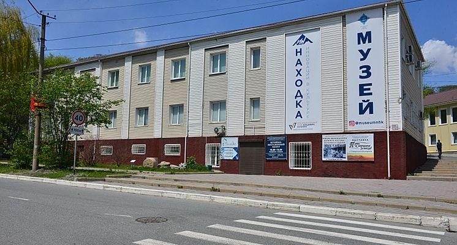
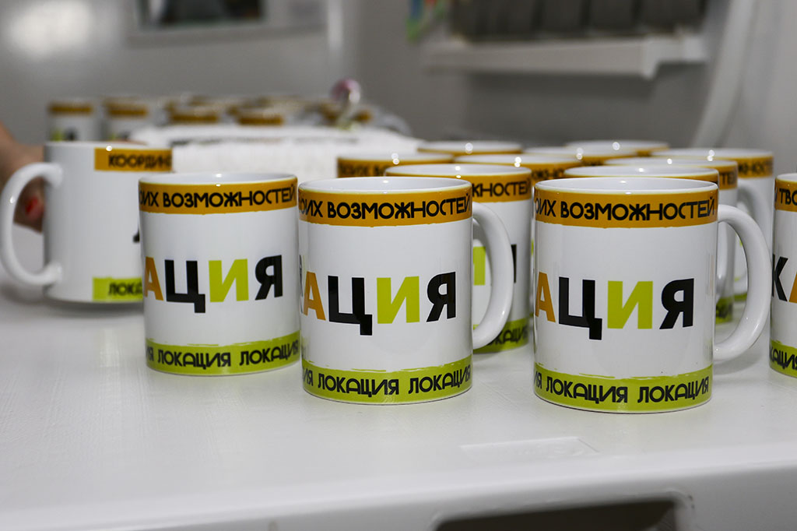

Музейно-выставочный центр г. Находки был открыт 4 ноября 1980 года, став важной частью культурной жизни города. Изначально носил название Музея истории города Находка и размещался в здании в "старом" центре города, где создавался единый культурный комплекс.

В 1991 году музей был переименован в Музейно-выставочный центр г. Находки. За прошедшие годы он собрал богатую коллекцию, насчитывающую более 30 000 единиц хранения, охватывающую различные тематики: от книг и нумизматики до тканей, стекла, дерева и предметов археологии. Коллекция включает в себя материалы, переданные делегациями городов-побратимов, а также работы ДПИ и сувениры.
В 2018 году в музее открылась постоянная историческая экспозиция «Города по имени Находка», в которой впервые представлены материалы из фондов музеев и архивов России и Японии. Экспозиция имеет кольцевую композицию, позволяющую посетителям вернуться к началу и открыть для себя новые связи в истории.

Музейно-выставочный центр г. Находки предлагает своим посетителям не только богатую историю, но и современные выставочные пространства, а также территорию проектирования будущего города. Регулярно обновляемые временные выставки делают музей привлекательным местом для посещения.